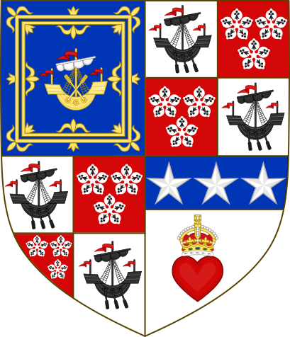
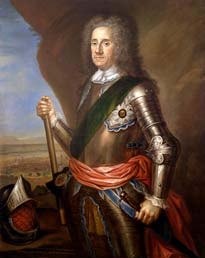
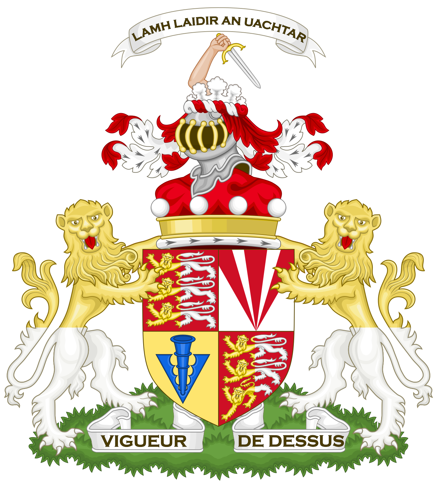
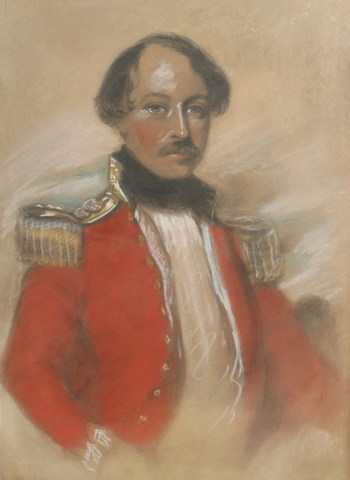
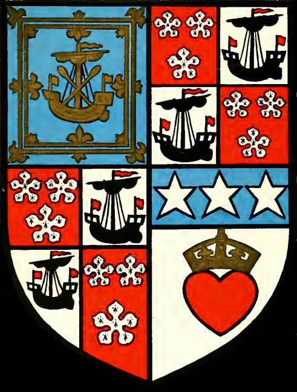

The FitzMaurice Coat of Arms
Blazon: Quarterly: 1st and 4th grandquarters, Argent on a Saltire Gules a Lymphad sails furled Or a Chief Ermine (FitzMaurice); 2nd grandquarter, quarterly: 1st and 4th, Gules three Cinquefoils Ermine (Hamilton); 2nd, Argent a Lymphad sails furled Sable (Arran); 3rd, Argent a Heart Gules imperially crowned Or on a Chief Azure three Mullets of the first (Douglas); over all at the fess point an Escallop Or for difference; 3rd grandquarter, quarterly: 1st and 4th, Gules three Lions passant guardant per pale Or and Argent (O'Brien); 2nd, Argent three Piles meeting in the point issuing from the chief Gules; 3rd, Argent a Pheon Azure.
This is your family's coat of arms. Every quarter of the shield, every supporter flanking it, every element of the crest above it tells a chapter of the story that runs from a Scottish king in the 1400s to a soldier stepping off a troopship in 1951. A quartered shield in heraldry is a visual family tree — each section represents a different noble bloodline united through centuries of marriage and inheritance. This page breaks down exactly what each element means and how it connects to you.
What the Arms Mean
The Red Saltire on Ermine — FitzMaurice
The dominant quarters of the shield: Ermine, a saltire gules. The white background spotted with black ermine tails is one of heraldry's most prestigious backgrounds, associated with royalty and high nobility. The red diagonal cross is the FitzMaurice family's own mark. This is your family's quarter — directly connected to Edward Dixon, Reg, Patricia, and Amanda. The lymphad (ancient galley ship) laid over the saltire represents the Earldom of Orkney itself.
Your direct bloodline — Reg, Edward Dixon, Patricia, AmandaHamilton Arms — Cinquefoils, Ship, Heart & Stars
This complex quarter carries the arms of the House of Hamilton. The three cinquefoils on ermine are the Hamilton family charge, tracing back to James Hamilton, 1st Lord Hamilton, who married Princess Mary Stewart — daughter of King James II of Scotland. The black lymphad represents the ancient Earldom of Arran. The crowned heart on blue with three stars is the Douglas arms, representing the marriage of Anne Hamilton, 3rd Duchess of Hamilton, to Lord William Douglas. The escallop (scallop shell) at the centre is the cadency mark of Lord George Hamilton, 1st Earl of Orkney — fifth son of the Duchess, and Britain's first ever Field Marshal.
Your line back to King James II of ScotlandO'Brien / Inchiquin Arms — Three Lions
Three lions passant guardant in gold and silver on red — the arms of the O'Brien family, Barons of Inchiquin. This ancient Irish noble line entered the Orkney story when Mary O'Brien, Countess of Orkney, married into the family. Through her, the Earldom eventually passed from the Hamilton bloodline to the FitzMaurice family via the succession through the 5th Earl. The piles (red wedges) and pheon (arrowhead) in the sub-quarters represent additional O'Brien and related Irish lineages.
The Irish bridge between Hamilton and FitzMauriceThe Oak, the Saw & the Sagittarius
Two crests sit above the coronet of an Earl. The oak tree penetrated by a frame-saw is one of the most distinctive crests in Scottish heraldry — it belongs to the House of Hamilton. Legend holds that a Hamilton ancestor rescued a Scottish king from ambush by hiding him in a hay cart, sawing through a log to make room. The grateful king rewarded the family with the single-word motto "Through" — meaning "I came through danger for you." The Sagittarius (mounted archer) to the left is the FitzMaurice / Petty-Lansdowne crest, representing the warrior-scholar tradition of the Kerry FitzMaurices. Together, these two crests above the shield unite the Hamilton and FitzMaurice family traditions.
Hamilton rescue legend + FitzMaurice warrior traditionThe White Antelope & the Brown Stag
On the left: a white antelope with golden horns, ducally gorged (wearing a coronet collar) and chained in gold. This is a classic Hamilton supporter — the gold chain signifies nobility in service to the Crown. On the right: a brown stag with gold antlers, also gorged and chained. This is associated with the FitzMaurice / Petty-Lansdowne line — the stag symbolises wisdom, nobility, and one who will not fight unless provoked. Both supporters are charged on the shoulder with a cinquefoil ermine, tying them back to the Hamilton origin. The two animals standing either side of the shield represent the two great family lines — Hamilton and FitzMaurice — holding up the Earldom between them.
Hamilton (left) and FitzMaurice (right) united“Through Courage”
The motto combines the ancient Hamilton word "Through" — from the saw-and-oak rescue legend — with "Courage", the FitzMaurice addition. It is both a remembrance and a command: we came through, and we did it with courage. Cecil O'Bryen FitzMaurice, the 8th and last Earl, literally lived this motto — he came through North Africa, Italy, France, Germany and Korea, two full wars, before returning home to inherit a 300-year-old title. The motto banner flies above the entire composition, crowning every element below.
300 years of family spirit — from a rescued king to a soldier in KoreaYour Family in the Arms
| Element | Represents | Your Connection |
|---|---|---|
| Red saltire on ermine | FitzMaurice family | Your direct bloodline — Reg, Edward Dixon, Patricia, Amanda |
| Ship on the saltire | Earldom of Orkney | The title your family held for generations |
| Cinquefoils & ship (2nd quarter) | House of Hamilton & Arran | Your line back through Princess Mary Stewart to King James II |
| Crowned heart & stars | House of Douglas | Anne Hamilton's marriage to Lord William Douglas |
| Gold escallop | Lord George Hamilton, 1st Earl | Britain's first Field Marshal — founder of your Earldom |
| Three lions (3rd quarter) | O'Brien / Inchiquin | The Irish noble line bridging Hamilton to FitzMaurice |
| Oak tree with saw | Hamilton crest | The ancient rescue of a Scottish king |
| Sagittarius | FitzMaurice / Lansdowne crest | The Kerry FitzMaurice warrior-scholar tradition |
| White antelope | Hamilton supporter | The Scottish royal line — nobility in service |
| Brown stag | FitzMaurice supporter | Wisdom, and one who will not fight unless provoked |
| “Through Courage” | Combined motto | 300 years of family spirit — Hamilton rescue + FitzMaurice courage |
A Heraldic Journey — How the Arms Were Built
Each generation added a layer. The coat of arms of the FitzMaurice Earls of Orkney didn't appear all at once — it was assembled over five centuries as families married, inherited titles, and merged their heraldic identities. Here is the story of how each element entered the arms.










The Man Who Carried the Arms
Born in 1919, Cecil served as an R.A.S.C. driver through WWII — North Africa, Italy, France, and Germany — then was sent to Korea. While serving there, the 7th Earl died and Cecil unexpectedly inherited the title. The Evening News called him a "rags to riches Earl" — he had worked in a garage before the war. He inherited an estate of £42,893 (approximately £1.5–2 million today).
He married Rose Silley at St Mary's Church, Brixham, Devon in November 1952. He died without issue in 1998 — and with him died the FitzMaurice Earldom of Orkney. The title passed to Oliver Peter St John as the 9th Earl, ending the FitzMaurice chapter of the arms entirely.
Cecil is Amanda's 3rd cousin once removed. Both descend from the 5th Earl: Amanda through Henry Warrender → Edward Dixon → Reg → Patricia; Cecil through Frederick O'Brien RN → Douglas Commerell Menzies → Douglas Frederick Harold. Henry Warrender and Frederick O'Brien were brothers — sons of the 5th Earl.